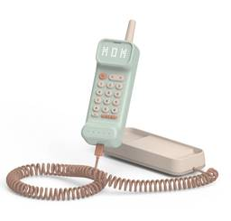

デイリーガジェット
https://daily-gadget.net/
デイリーガジェットは、スマホや海外発のユニークなガジェット、クラウドファンディングの注目アイテムまで幅広くレビュー。生活をもっと楽しく快適にする視点で、日常に驚きと便利さを届けるガジェット情報メディアです。
フィード
【AliExpress】「Nintendo Switch 2 マリオカートワールドセット」がセールで約6.5万円！本体とマリカがひとつに
デイリーガジェット
10月1日0時からAliExpressで超大型セール「AliExpress choice day」が開催されています !! AliExpressにて、「Nintendo Switch 2 Mario Kart World...投稿 【AliExpress】「Nintendo Switch 2 マリオカートワールドセット」がセールで約6.5万円！本体とマリカがひとつに は デイリーガジェット に最初に表示されました。関連記事:任天堂「バーチャルボーイ – Nintendo Classics」に5タイトル追加！『V-テトリス』『ジャック・ブラザーズ』など解禁Paper Mario初のロムハック「Star Nova」が5月5日公開！新章＆70スターピース搭載で別ゲーム化2,980円から楽しめる任天堂の立体視VRが復活——「バーチャルボーイ Nintendo Classics」で幻の未発売作もローンチ予定
6時間前

画面のない子ども用電話「Waffle Home」が米国で予約開始！親が許可した相手としか話せず月額0ドルのプランも 1
1
デイリーガジェット
子ども向け通信機器を手がけるWaffleは、5〜12歳を対象とした家庭用電話「Waffle Home」の予約受付を米国で開始しました。 価格は119ドルで、出荷は2026年10月30日からです。画面もアプリもインターネッ...投稿 画面のない子ども用電話「Waffle Home」が米国で予約開始！親が許可した相手としか話せず月額0ドルのプランも は デイリーガジェット に最初に表示されました。関連記事:深紅の携帯型ゲーム機「Ayaneo Pocket Air Mini」限定版が登場！クラシックアーケードゲームが内蔵された魅力的な限定版で6月出荷へついにモップも自動洗浄！超進化最新ロボット掃除機レビュー【ECOVACS DEEBOT X1 TURBO】2021年のUMPC（超小型ノートパソコン）全まとめ比較【随時更新】
8時間前
Xboxの「クラウドゲーミング専用コントローラー」Activision Blizzard買収の陰で開発が止まっていたと報道！黒と白の小型モデルの行方は
デイリーガジェット
2026年5月にブラジルの認証機関Anatel経由でリークした、Microsoftの「Xbox Cloud Gaming」向けコンパクトコントローラーの行方が怪しくなっています。 米New York Timesは、同様の...投稿 Xboxの「クラウドゲーミング専用コントローラー」Activision Blizzard買収の陰で開発が止まっていたと報道！黒と白の小型モデルの行方は は デイリーガジェット に最初に表示されました。関連記事:GameSir X5 Lite & Backbone Pro Xbox25周年版が登場！センサー強化のスマホ用コントローラーマイクロソフトから初代カラーの「Xbox Series X25」が登場！25周年を記念したスケルトングリーン仕様で11月に一部市場で限定発売へ「ROG Xbox Allyシリーズ」がついに情報解禁＆予約受付開始！最新ポータブルゲーミング端末の新型2モデルは何が違う？
9時間前
【AliExpress】「Xiaomi 17T Pro」がセールで15.0万円台！ライカ5倍望遠＆おサイフ対応
デイリーガジェット
10月1日0時からAliExpressで超大型セール「AliExpress choice day」が開催されています !! AliExpressにて、「Xiaomi 17T Pro」が大幅割引されるセールを実施しています...投稿 【AliExpress】「Xiaomi 17T Pro」がセールで15.0万円台！ライカ5倍望遠＆おサイフ対応 は デイリーガジェット に最初に表示されました。関連記事:【AliExpress】「FPDタブレット」がセールで約1.5万円台！UNISOC T620搭載で90Hz・FHD+・Widevine L1対応のコンパクト機【AliExpress】「Xiaomi Pad Mini」がセールで約7.8万円台！ハイエンド級SoCを積んだ小型タブレットがセール中【AliExpress】「Bigme B6」がセールで約2.4万円台！Android 14搭載のカラーE-Ink
11時間前
【AliExpress】「ANBERNIC RG Rotate」がセールで1.3万円台！画面がくるっと回る携帯ゲーム機
デイリーガジェット
10月1日0時からAliExpressで超大型セール「AliExpress choice day」が開催されています !! AliExpressにて、ANBERNIC RG Rotateが大幅割引されるセールを実施してい...投稿 【AliExpress】「ANBERNIC RG Rotate」がセールで1.3万円台！画面がくるっと回る携帯ゲーム機 は デイリーガジェット に最初に表示されました。関連記事:携帯ゲーム機のAnbernic公式ストアで新春セール！最新機種まで全体安く携帯ゲーム機のAnbernic公式ストアで独身の日セール！最安値が多数携帯ゲーム機のAnbernic公式ストアで大規模セール中！【AndroidやLinux搭載ゲーム機が最大31%OFFに】
12時間前
UGREEN「Magic E Inkケース」が海外で発売！iPhone 18 Proの背面に3.7インチ6色電子ペーパー
デイリーガジェット
UGREENは2026年10月2日、iPhone 18 Pro／17 Proシリーズ向けのスマホケース「Magic E Ink ケース」を中国で発売しました。 背面に3.7インチの6色カラー電子ペーパーを組み込み、アプリ...投稿 UGREEN「Magic E Inkケース」が海外で発売！iPhone 18 Proの背面に3.7インチ6色電子ペーパー は デイリーガジェット に最初に表示されました。関連記事:Honor「Magic 9」がシリーズが9月28日に発表へ！公式が11,000mAhバッテリーを予告iPhone18 Proは約15分で半分まで充電可能に！純正40Wアダプタ所有者は買い足し不要Paperless Paperから「Paper 7」が登場！オープンソース対応の7インチE Inkカラーフレーム
14時間前
TDK「メタオプティクスミラー」で網膜に直接映像を描くスマートグラスを実証！厚さ150ナノメートルの透明ミラーをレンズに埋め込み
デイリーガジェット
TDKは2026年10月2日、メタオプティクスミラーを用いたスマートグラス向けの網膜直接描画（DRP：Direct Retinal Projection）ディスプレイの実証に成功したと発表しました。 同社はこの方式での実...投稿 TDK「メタオプティクスミラー」で網膜に直接映像を描くスマートグラスを実証！厚さ150ナノメートルの透明ミラーをレンズに埋め込み は デイリーガジェット に最初に表示されました。関連記事:デスクが”森”に変わる8BitDo「Cozy Collection」！ピクセルアートのキーボード・マウス・コントローラー3点「DESKNODE」CNCアルミ×モジュラー構成のデスク用コマンドパッドがKickstarterに登場！ボタンとノブでPC操作を集約「Xiaomi MIX Flip」を実機レビュー！気になっていたLEICAカメラ搭載＆Xiaomi初の縦折りスマホをチェック
15時間前
Amazon新型「Kindle」3機種を一斉刷新し画面の段差をなくした新設計に！シリーズ初のアルミ背面モデルも登場
デイリーガジェット
Amazonは2026年10月1日、電子書籍リーダー「Kindle」「Kindle Paperwhite」「Kindle Colorsoft」の3機種を一斉に刷新しました。 全機種で画面と本体フレームの段差をなくしたフラ...投稿 Amazon新型「Kindle」3機種を一斉刷新し画面の段差をなくした新設計に！シリーズ初のアルミ背面モデルも登場 は デイリーガジェット に最初に表示されました。関連記事:「Kindle Paperwhite シグニチャーエディション」が9,000円オフの23,980円でセール中！明るさ自動調節搭載の電子書籍リーダーカラー対応で進化！Amazon「Kindle Colorsoft」シリーズが新登場、読書体験がより豊かにアマゾンでKindle Paperwhiteが43%OFFの税込7,980円で販売中
16時間前
【AliExpress】「PlayStation Portal」がセールで約3.8万円台！8インチ1080p液晶とDualSense相当の操作系を備えたPS5用リモートプレーヤー
デイリーガジェット
10月1日0時からAliExpressで超大型セール「AliExpress choice day」が開催されています !! AliExpressにて、「PlayStation Portal」が大幅割引されるセールを実施し...投稿 【AliExpress】「PlayStation Portal」がセールで約3.8万円台！8インチ1080p液晶とDualSense相当の操作系を備えたPS5用リモートプレーヤー は デイリーガジェット に最初に表示されました。関連記事:ソニーがPS3・PS Vitaの「PlayStation Store」閉鎖を正式発表、2027年7月に世界全域で購入終了へソニーが4月2日より『PS5』本体と周辺機器を値上げへ。Proモデルは13.8万円へ、Portalも対象となるなか日本語専用機は5.5万円を継続ソニーが「PlayStation Portal」新型を開発中か。有機ELと120Hz駆動に対応した上位モデルに関するリーク情報が浮上
20時間前
【AliExpress】「FPDタブレット」がセールで約1.5万円台！UNISOC T620搭載で90Hz・FHD+・Widevine L1対応のコンパクト機
デイリーガジェット
10月1日0時からAliExpressで超大型セール「AliExpress choice day」が開催されています !! AliExpressにて、「FPDタブレット」が大幅割引されるセールを実施しています。購入画面で...投稿 【AliExpress】「FPDタブレット」がセールで約1.5万円台！UNISOC T620搭載で90Hz・FHD+・Widevine L1対応のコンパクト機 は デイリーガジェット に最初に表示されました。関連記事:【AliExpress】「Bigme B6」がセールで約2.4万円台！Android 14搭載のカラーE-Ink【AliExpress】「CMF Watch 3 Pro」がセールで約9千円！ベゼル着せ替え対応の金属製ウォッチ【AliExpress】「Anbernic RG DS」がセールで約1.5万円！2画面タッチ対応・Android 14搭載のDS型ゲーム機
1日前